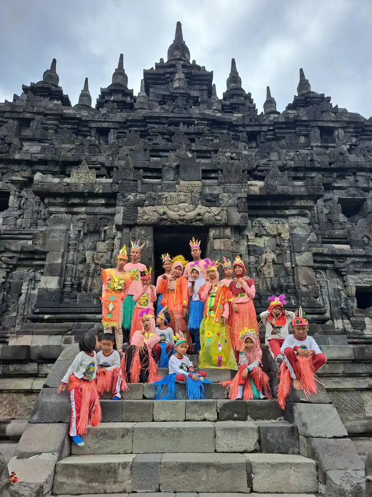
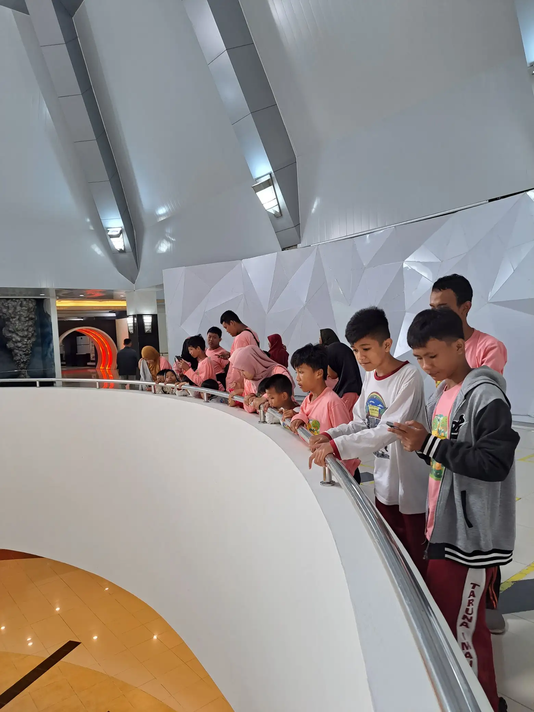
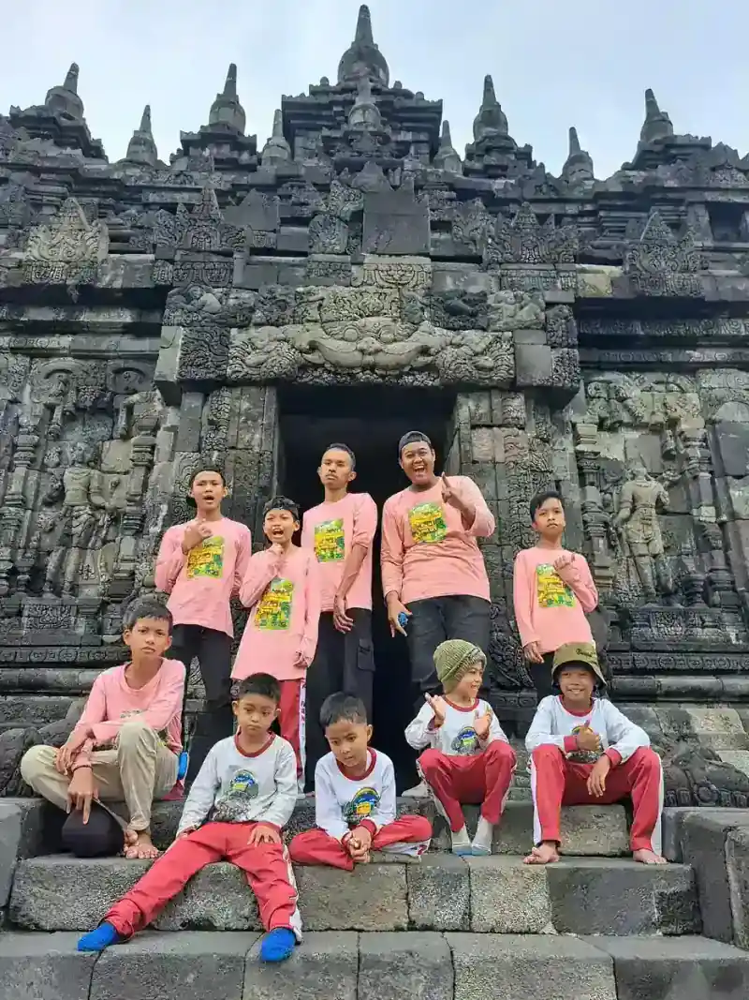

Wisata edukasi untuk anak berkebutuhan khusus (ABK) bukan sekadar jalan-jalan biasa. Bagi anak-anak istimewa ini, setiap perjalanan keluar dari lingkungan sekolah adalah kesempatan emas untuk belajar dengan cara yang tidak bisa digantikan oleh ruang kelas mana pun. Di Yayasan Ukhuwah Kaffah Amanatullah (YUKA), kami percaya bahwa wisata edukasi ABK adalah salah satu metode pembelajaran paling berharga yang bisa kami berikan kepada anak-anak didik kami di Sekolah Inklusi Taruna Imani, Yogyakarta.
Bayangkan seorang anak dengan spektrum autisme yang biasanya sulit berinteraksi di kelas, tiba-tiba tertarik bertanya kepada pemandu museum tentang batu vulkanik yang dipegangnya. Atau seorang anak dengan down syndrome yang biasanya pendiam, mendadak bersemangat menceritakan pengalamannya melihat relief candi kepada teman-temannya. Momen-momen seperti inilah yang menjadikan wisata edukasi begitu istimewa dan tidak ternilai harganya.
Dalam Islam, menuntut ilmu adalah kewajiban bagi setiap Muslim, tanpa terkecuali. Rasulullah SAW bersabda: "Menuntut ilmu itu wajib atas setiap Muslim." (HR. Ibnu Majah). Perintah ini tidak membedakan antara anak yang sempurna secara fisik dan mental dengan anak berkebutuhan khusus. Justru, memberikan akses pendidikan yang seluas-luasnya kepada ABK, termasuk melalui wisata edukasi anak berkebutuhan khusus, adalah bagian dari menjalankan amanah ilahi untuk memuliakan setiap manusia.
Mengapa Wisata Edukasi ABK Sangat Penting?
Sebagian orang mungkin bertanya: mengapa repot-repot membawa anak berkebutuhan khusus berwisata? Bukankah cukup belajar di kelas saja? Pertanyaan ini mungkin terdengar logis, tetapi sesungguhnya mencerminkan pemahaman yang belum lengkap tentang kebutuhan belajar ABK. Field trip sekolah inklusi memiliki manfaat yang jauh melampaui apa yang terlihat di permukaan.
1. Stimulasi Multisensorik yang Tidak Bisa Didapat di Kelas
Anak berkebutuhan khusus, terutama mereka dengan gangguan perkembangan, seringkali membutuhkan stimulasi dari berbagai indra untuk memproses dan menyerap informasi. Di dalam ruang kelas, stimulasi ini terbatas pada papan tulis, buku, dan suara guru. Namun saat wisata edukasi, mereka bisa merasakan tekstur batu candi yang berusia ratusan tahun, mencium aroma tanah dan rumput di area situs bersejarah, mendengar suara alam yang menenangkan, dan melihat langsung objek yang sebelumnya hanya mereka ketahui dari gambar.
Saat YUKA mengajak anak-anak ke Museum Gunung Merapi, misalnya, mereka bisa menyentuh replika batuan vulkanik, melihat diorama letusan gunung berapi, dan bahkan merasakan simulasi gempa bumi. Pengalaman multisensorik seperti ini menciptakan koneksi neuron yang jauh lebih kuat dibandingkan sekadar membaca buku teks tentang gunung berapi.
2. Pengembangan Keterampilan Sosial dalam Konteks Nyata
Salah satu tantangan terbesar bagi banyak anak berkebutuhan khusus adalah keterampilan sosial. Di lingkungan sekolah, interaksi sosial mereka terbatas pada teman sekelas dan guru yang sudah mereka kenal. Wisata edukasi membuka peluang interaksi dengan orang-orang baru: petugas tiket, pemandu wisata, pengunjung lain, dan masyarakat sekitar lokasi wisata.
Setiap interaksi ini adalah latihan sosial yang sesungguhnya. Anak belajar mengantri dengan sabar, berbicara sopan dengan orang yang baru dikenal, menjaga perilaku di tempat umum, dan bekerja sama dengan kelompok dalam situasi yang tidak terstruktur. Keterampilan-keterampilan ini sangat penting untuk kemandirian mereka di masa depan. Untuk anak yang masih kesulitan melakukan aktivitas sehari-hari secara mandiri, pendampingan lewat terapi okupasi dapat menjadi pelengkap yang relevan.
3. Membangun Kepercayaan Diri dan Rasa Memiliki
Banyak anak berkebutuhan khusus merasa terisolasi dari masyarakat. Mereka jarang diajak ke tempat umum karena orang tua atau pengasuh khawatir akan stigma sosial atau kesulitan mengelola perilaku mereka. Kunjungan edukasi ABK Yogyakarta yang dirancang dengan baik membuktikan kepada anak-anak ini bahwa mereka juga berhak menikmati ruang publik, bahwa mereka juga bagian dari masyarakat, dan bahwa dunia di luar sekolah menyambut mereka.
Ketika seorang anak berkebutuhan khusus berhasil menyelesaikan perjalanan wisata edukasi dengan baik, rasa percaya diri yang tumbuh dalam dirinya sungguh luar biasa. Ia tahu bahwa ia mampu. Ia tahu bahwa ia bisa beradaptasi. Dan perasaan itu akan terus terbawa dalam aktivitas-aktivitas lain dalam kehidupannya.
4. Pembelajaran Kontekstual yang Bermakna
Teori pendidikan modern menekankan pentingnya pembelajaran kontekstual - yaitu belajar dalam konteks nyata yang relevan dengan kehidupan sehari-hari. Untuk anak berkebutuhan khusus, prinsip ini bahkan lebih penting karena banyak dari mereka yang kesulitan memahami konsep abstrak. Wisata edukasi mengubah konsep abstrak menjadi pengalaman konkret yang dapat mereka rasakan secara langsung.
Belajar tentang sejarah kerajaan Hindu-Buddha di Indonesia menjadi jauh lebih bermakna ketika anak bisa berdiri di depan Candi Plaosan dan melihat sendiri betapa megahnya bangunan yang dibangun oleh leluhur bangsa ini berabad-abad yang lalu. Pelajaran IPA tentang vulkanologi menjadi hidup ketika anak melihat langsung bukti-bukti dahsyatnya letusan Gunung Merapi di museum.

Pengalaman YUKA: Wisata Edukasi ke Candi Plaosan dan Museum Gunung Merapi
YUKA telah menyelenggarakan beberapa wisata edukasi ABK yang menjadi momen tak terlupakan bagi seluruh keluarga besar Sekolah Inklusi Taruna Imani. Dua destinasi yang paling berkesan adalah kawasan Candi Plaosan di area Borobudur dan Museum Gunung Merapi di lereng Merapi, Sleman. Kedua lokasi ini dipilih bukan secara kebetulan, melainkan melalui pertimbangan matang terkait nilai edukasi, aksesibilitas, dan kesesuaian dengan kebutuhan anak-anak didik kami.
Kunjungan ke Candi Plaosan - Menyelami Warisan Budaya Nusantara
Kunjungan ke kawasan Candi Plaosan adalah salah satu momen paling membahagiakan bagi anak-anak YUKA. Di sana, mereka tidak hanya melihat candi, tetapi benar-benar merasakan kekayaan budaya Indonesia. Anak-anak berkesempatan mengenakan kostum tradisional Jawa, berfoto bersama dengan latar candi yang megah, dan mendengarkan cerita tentang sejarah kerajaan Mataram Kuno. Untuk anak-anak yang biasanya menghabiskan hari di lingkungan sekolah yang sama, pengalaman ini membuka cakrawala baru yang sangat luas.
Saat mengunjungi kawasan candi, kami menyaksikan hal-hal yang sulit dipercaya terjadi di ruang kelas biasa. Seorang siswa yang biasanya sangat pasif dan jarang berbicara, tiba-tiba menjadi begitu antusias menceritakan apa yang dilihatnya. Ia menunjuk-nunjuk relief di dinding candi dan bertanya tentang cerita di balik ukiran tersebut. Guru pendamping hampir tidak percaya melihat transformasi ini.
Anak-anak juga belajar tentang toleransi dan keberagaman. Mereka memahami bahwa Indonesia memiliki sejarah panjang di mana berbagai agama dan budaya hidup berdampingan secara harmonis. Pelajaran ini menjadi sangat relevan dengan nilai-nilai yang diajarkan YUKA tentang ukhuwah (persaudaraan) dan saling menghargai sesama manusia.

Eksplorasi Museum Gunung Merapi - Belajar Sains dari Alam
Museum Gunung Merapi menawarkan pengalaman edukasi yang sangat kaya bagi anak-anak berkebutuhan khusus. Dengan koleksi diorama, video dokumenter, replika batuan vulkanik, dan berbagai alat peraga interaktif, museum ini menjadi laboratorium sains raksasa yang ramah anak. Anak-anak YUKA bisa belajar tentang proses terbentuknya gunung berapi, jenis-jenis batuan, dampak letusan, dan pentingnya mitigasi bencana - semuanya dikemas dalam bentuk yang mudah dipahami dan menyenangkan.
Yang paling mengharukan dari kunjungan ke Museum Gunung Merapi adalah momen ketika anak-anak menonton film dokumenter tentang letusan Merapi tahun 2010. Beberapa dari mereka tampak sangat terharu melihat perjuangan para korban dan relawan. Seorang anak bahkan bertanya, "Ustadzah, apakah kita bisa bantu orang-orang yang terkena bencana?" Pertanyaan sederhana ini menunjukkan bahwa wisata edukasi tidak hanya mengasah kecerdasan intelektual, tetapi juga menumbuhkan empati dan kepedulian sosial.
Perjalanan ke museum juga menjadi momen bonding yang luar biasa antara anak-anak, guru, dan pendamping. Di dalam bus, mereka bernyanyi bersama. Di lokasi, mereka saling membantu ketika ada teman yang kelelahan. Di akhir perjalanan, mereka pulang dengan wajah yang lelah tetapi berseri-seri, penuh cerita yang akan mereka kenang selamanya.
"Melihat anak-anak kami tertawa, bertanya, dan bersemangat belajar di luar kelas, saya semakin yakin bahwa pendidikan inklusi yang sesungguhnya tidak bisa dibatasi oleh dinding ruangan. Dunia adalah kelas belajar terbaik bagi mereka." - Ibu Yupie Nurul Azkia, Ketua YUKA
Tips Praktis Menyelenggarakan Wisata Edukasi untuk ABK
Berdasarkan pengalaman YUKA menyelenggarakan berbagai field trip sekolah inklusi, berikut adalah panduan praktis yang bisa digunakan oleh sekolah, yayasan, atau keluarga yang ingin mengajak anak berkebutuhan khusus berwisata edukasi.
Persiapan Sebelum Keberangkatan
- Survei lokasi terlebih dahulu: Kunjungi destinasi wisata sebelum membawa anak-anak. Perhatikan aksesibilitas (jalan yang rata, ketersediaan ramp untuk kursi roda), tingkat kebisingan, ketersediaan toilet yang memadai, dan area istirahat yang teduh. Pastikan lokasi aman dan nyaman untuk anak dengan berbagai jenis kebutuhan khusus.
- Buat rencana perjalanan yang detail dan fleksibel: Tentukan jadwal dengan jelas, tetapi siapkan rencana cadangan jika ada anak yang kelelahan atau overstimulated. Sertakan waktu istirahat yang cukup di antara aktivitas. Anak ABK membutuhkan waktu transisi yang lebih panjang dibandingkan anak pada umumnya.
- Persiapkan anak-anak secara mental: Gunakan social stories atau jadwal visual untuk menjelaskan kepada anak apa yang akan mereka alami selama wisata. Tunjukkan foto-foto lokasi yang akan dikunjungi. Ceritakan apa yang akan mereka lihat, dengar, dan rasakan di sana. Persiapan ini sangat penting terutama bagi anak dengan autisme yang membutuhkan prediktabilitas.
- Koordinasi dengan pihak destinasi: Hubungi pengelola tempat wisata untuk menginformasikan bahwa rombongan terdiri dari anak berkebutuhan khusus. Minta pemandu khusus jika tersedia, atau setidaknya minta agar pemandu berbicara dengan tempo yang lebih lambat dan menggunakan bahasa yang sederhana.
- Siapkan perlengkapan khusus: Bawa obat-obatan yang diperlukan, snack yang sesuai dengan kebutuhan diet masing-masing anak, alat bantu sensori (headphone peredam suara, fidget toys), dan perlengkapan P3K. Jangan lupa membawa persetujuan tertulis dari orang tua.
Selama Perjalanan
- Rasio pendamping yang memadai: Idealnya, rasio pendamping dengan anak ABK adalah 1:2 atau bahkan 1:1 untuk anak dengan kebutuhan tinggi. Setiap pendamping harus mengenal karakteristik anak yang didampinginya dan tahu cara menangani jika terjadi tantrum atau meltdown.
- Berikan kebebasan dalam batas yang aman: Biarkan anak mengeksplorasi sesuai minat dan kemampuannya. Jangan memaksakan semua anak untuk melihat setiap sudut museum jika ada yang lebih tertarik dengan satu pameran tertentu. Pembelajaran yang bermakna terjadi ketika anak merasa tertarik dan nyaman.
- Dokumentasikan momen-momen berharga: Foto dan video selama wisata edukasi bukan hanya kenangan, tetapi juga alat evaluasi yang sangat berharga. Melalui dokumentasi, guru dan orang tua bisa melihat bagaimana anak merespons berbagai stimulus, berinteraksi dengan lingkungan baru, dan menunjukkan kemajuan dalam berbagai aspek perkembangan.
- Siapkan titik kumpul dan protokol darurat: Pastikan semua pendamping tahu di mana titik kumpul jika ada anak yang terpisah. Setiap anak sebaiknya mengenakan tanda pengenal dengan nomor telepon darurat yang bisa dihubungi.

Setelah Wisata Edukasi
- Refleksi dan evaluasi bersama: Adakan sesi refleksi di kelas beberapa hari setelah wisata. Minta anak-anak menceritakan pengalaman favorit mereka, menggambar apa yang mereka lihat, atau membuat karya tulis sederhana. Kegiatan ini memperkuat memori dan memperdalam pemahaman mereka tentang apa yang telah dipelajari.
- Berikan apresiasi: Setiap anak yang berhasil menyelesaikan wisata edukasi layak mendapat apresiasi. Bukan hadiah materi yang besar, tetapi pengakuan bahwa mereka telah melakukan sesuatu yang hebat. Sertifikat sederhana atau pujian di depan kelas bisa menjadi motivasi yang luar biasa.
- Komunikasikan dengan orang tua: Bagikan foto, video, dan cerita tentang perjalanan kepada orang tua. Sampaikan perkembangan positif yang terlihat selama wisata. Orang tua perlu tahu bahwa anak mereka mampu melakukan hal-hal yang mungkin sebelumnya mereka ragukan.
- Evaluasi untuk perbaikan: Catat apa yang berjalan baik dan apa yang perlu diperbaiki untuk wisata edukasi berikutnya. Masukan dari semua pendamping sangat berharga untuk meningkatkan kualitas kegiatan di masa mendatang.
Perspektif Islam: Menjelajahi Ciptaan Allah sebagai Sarana Belajar
Dalam perspektif Islam, wisata atau perjalanan memiliki kedudukan yang sangat mulia. Allah SWT berfirman dalam Al-Quran:
"Katakanlah: 'Berjalanlah di muka bumi, kemudian perhatikanlah bagaimana kesudahan orang-orang yang mendustakan itu.'" (QS. Al-An'am: 11)
Ayat ini mengajarkan bahwa perjalanan bukan sekadar berpindah tempat, melainkan sarana untuk merenungkan kebesaran Allah, mengambil pelajaran dari sejarah, dan memperdalam keimanan. Ketika anak-anak ABK mengunjungi Museum Gunung Merapi dan menyaksikan betapa dahsyatnya kekuatan alam, mereka sekaligus belajar tentang kebesaran Allah sebagai pencipta alam semesta. Ketika mereka melihat keindahan arsitektur Candi Plaosan, mereka belajar menghargai warisan peradaban yang diciptakan oleh manusia-manusia terdahulu.
YUKA selalu menyisipkan perspektif keimanan dalam setiap wisata edukasi. Anak-anak diajak berdoa sebelum berangkat, bersyukur atas nikmat yang mereka lihat selama perjalanan, dan merefleksikan pengalaman mereka sebagai bagian dari proses mengenal Allah melalui ciptaan-Nya. Pendekatan ini menjadikan wisata edukasi tidak hanya mengisi pikiran, tetapi juga mengisi hati.
Destinasi Wisata Edukasi Ramah ABK di Yogyakarta
Yogyakarta adalah surga bagi wisata edukasi anak berkebutuhan khusus. Berikut beberapa destinasi yang telah YUKA uji dan rekomendasikan berdasarkan pengalaman langsung kami:
- Museum Gunung Merapi, Sleman: Sangat cocok untuk pembelajaran sains dan kebencanaan. Area yang cukup luas, fasilitas memadai, dan pameran interaktif yang menarik perhatian anak-anak. Akses jalan cukup baik meskipun berada di dataran tinggi.
- Kawasan Candi Plaosan/Borobudur, Klaten-Magelang: Ideal untuk pembelajaran sejarah, budaya, dan seni. Area yang terbuka luas memberikan ruang gerak yang cukup bagi anak-anak. Tersedia jasa foto dengan kostum tradisional yang sangat disukai anak-anak.
- Kebun Binatang Gembira Loka, Yogyakarta: Cocok untuk pengenalan satwa dan lingkungan. Area yang luas dengan jalur yang cukup aksesibel. Banyak sudut yang teduh untuk istirahat.
- Taman Pintar, Yogyakarta: Wahana edukasi berbasis sains dengan banyak alat peraga interaktif. Sangat sesuai untuk anak-anak yang menyukai eksperimen dan eksplorasi hands-on.
- Desa Wisata sekitar Yogyakarta: Beberapa desa wisata menawarkan pengalaman belajar tentang pertanian, kerajinan, dan kehidupan pedesaan yang sangat bermanfaat untuk pengembangan life skill ABK.
Tantangan dan Cara Mengatasinya
Menyelenggarakan wisata edukasi ABK tentu tidak tanpa tantangan. Berikut beberapa tantangan yang sering dihadapi YUKA beserta solusinya:
Keterbatasan Dana
Wisata edukasi membutuhkan biaya yang tidak sedikit: transportasi, tiket masuk, makan, asuransi perjalanan, dan biaya pendamping. YUKA mengatasi tantangan ini melalui penggalangan donasi khusus untuk kegiatan wisata edukasi, kerja sama dengan pengelola destinasi untuk mendapat potongan harga, dan memanfaatkan momen-momen tertentu seperti Hari Pendidikan Nasional atau Hari Disabilitas Internasional ketika banyak destinasi wisata memberikan akses gratis.
Kekhawatiran Orang Tua
Beberapa orang tua merasa khawatir melepas anak mereka untuk perjalanan jauh. YUKA mengatasi hal ini dengan mengadakan pertemuan pra-wisata untuk menjelaskan seluruh rencana, menyampaikan protokol keselamatan, dan bahkan mengundang orang tua untuk ikut serta sebagai pendamping. Transparansi dan komunikasi terbuka adalah kunci membangun kepercayaan orang tua.
Respons Masyarakat
Tidak bisa dipungkiri, masih ada stigma terhadap anak berkebutuhan khusus di masyarakat. Terkadang, tatapan aneh atau komentar tidak sensitif dari pengunjung lain bisa membuat pendamping merasa tidak nyaman. Namun, justru inilah salah satu alasan mengapa wisata edukasi penting: untuk menormalkan kehadiran ABK di ruang publik dan mengedukasi masyarakat bahwa anak-anak ini memiliki hak yang sama untuk menikmati fasilitas umum.
Membangun Masa Depan Melalui Pengalaman
Setiap kunjungan edukasi ABK Yogyakarta yang YUKA selenggarakan bukan hanya tentang satu hari perjalanan. Dampaknya jauh melampaui momen itu sendiri. Anak-anak yang rutin mendapat kesempatan wisata edukasi menunjukkan perkembangan yang signifikan dalam berbagai aspek: kemampuan komunikasi meningkat, rasa percaya diri tumbuh, wawasan bertambah, dan yang terpenting, mereka merasa menjadi bagian dari dunia yang lebih luas.
Allah SWT menciptakan setiap anak dengan keistimewaannya masing-masing. Firman Allah dalam Al-Quran: "Sesungguhnya Kami telah menciptakan manusia dalam bentuk yang sebaik-baiknya." (QS. At-Tin: 4). Tugas kita sebagai pendidik, orang tua, dan masyarakat adalah memastikan bahwa setiap anak, termasuk anak berkebutuhan khusus, mendapat kesempatan untuk mengembangkan potensi terbaiknya. Wisata edukasi adalah salah satu jalan untuk mewujudkan hal tersebut.
YUKA berkomitmen untuk terus menyelenggarakan wisata edukasi yang berkualitas bagi anak-anak didik Sekolah Inklusi Taruna Imani. Namun, komitmen ini tidak bisa kami wujudkan sendirian. Dibutuhkan dukungan dari banyak pihak: donatur yang berkenan membiayai kegiatan, relawan yang bersedia menjadi pendamping, pengelola destinasi wisata yang membuka akses seluas-luasnya, dan masyarakat yang menyambut kehadiran anak-anak istimewa ini dengan hangat dan tanpa diskriminasi.
Karena setiap anak berhak melihat dunia, belajar dari alam, dan menemukan keajaiban di balik setiap perjalanan. Termasuk anak-anak berkebutuhan khusus yang selama ini mungkin jarang mendapat kesempatan itu. Mari bersama-sama kita buka pintu dunia bagi mereka.
Pertanyaan yang Sering Diajukan (FAQ)
Apa itu anak berkebutuhan khusus?
Menurut Kemenkes Yankes dengan merujuk Panduan Kementerian PPPA, anak berkebutuhan khusus (ABK) adalah anak yang mengalami keterbatasan atau keluarbiasaan baik fisik, mental-intelektual, sosial, maupun emosional yang berpengaruh signifikan dalam proses tumbuh kembang dibandingkan anak seusianya. ABK bukan penyakit menular, melainkan kondisi yang dipicu beragam faktor.
Apa hak anak berkebutuhan khusus?
ABK memiliki hak yang sama dengan anak pada umumnya: hak hidup, pengasuhan layak, pendidikan, kesehatan, dan akses fasilitas umum. UU No. 8 Tahun 2016 menjamin hak-hak penyandang disabilitas secara komprehensif, termasuk hak atas perlindungan hukum dan aksesibilitas.
Bagaimana cara mendukung anak berkebutuhan khusus?
Dukungan utama datang dari keluarga: penerimaan, stimulasi, dan pendampingan konsisten. Selanjutnya akses layanan profesional (dokter anak, terapis, psikolog, sekolah inklusi/SLB). Masyarakat juga berperan dengan tidak diskriminatif dan menyediakan lingkungan inklusif. Kemenkes Ayo Sehat menyediakan kumpulan referensi resmi untuk keluarga dan pendidik.
Apakah anak berkebutuhan khusus bisa mandiri saat dewasa?
Banyak ABK yang dapat hidup mandiri saat dewasa, terutama jika mendapat intervensi dini, pendidikan inklusif, terapi yang tepat, dan dukungan keluarga konsisten. Tingkat kemandirian berbeda tiap anak tergantung jenis dan derajat kebutuhan khusus. Hindari ekspektasi tunggal: rayakan setiap kemajuan, dampingi sesuai kebutuhan.
Kapan harus mulai konsultasi tenaga profesional untuk ABK?
Sedini mungkin, idealnya begitu orang tua atau guru menemukan tanda-tanda perkembangan tidak seperti anak seusianya. Intervensi dini (usia 0-6 tahun) adalah masa kritis perkembangan saraf. Konsultasi dengan dokter anak, psikolog perkembangan, atau ahli tumbuh kembang adalah langkah pertama yang tepat sebelum mengandalkan informasi mandiri.
Sumber Resmi & Referensi Authoritative
Konten artikel ini diperkuat dengan referensi dari lembaga resmi pemerintah dan organisasi kesehatan internasional:
- UU No. 8 Tahun 2016 tentang Penyandang Disabilitas peraturan.bpk.go.id
- Kemenkes Ayo Sehat: Kumpulan Link Penting untuk Anak Disabilitas ayosehat.kemkes.go.id
- Kemenkes Yankes: Hak Anak Berkebutuhan Khusus keslan.kemkes.go.id
- Kemdikbudristek: Panduan Pelaksanaan Pendidikan Inklusif (2022) repositori.kemendikdasmen.go.id
Disclaimer Medis & Pendidikan: Artikel ini bersifat edukasi umum dan bukan pengganti konsultasi profesional. Untuk diagnosis, asesmen, atau penanganan anak berkebutuhan khusus, silakan konsultasikan langsung dengan dokter anak, psikiater anak, psikolog perkembangan, terapis okupasi, atau tenaga ahli pendidikan khusus yang berlisensi. YUKA Indonesia mendukung pendekatan multidisiplin dan tidak menggantikan peran tenaga medis maupun terapis profesional.